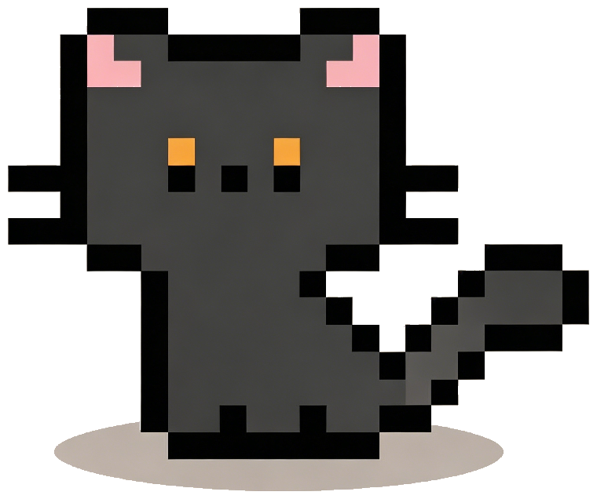

L
Leon's Web Lab
tools, experiments, little web things
Personal blog / web tools
一些做出來的小東西。
這裡像一個小型部落格，也像一個作品索引。之後做的工具、練習、奇怪靈感和能直接打開用的網頁，都會慢慢收在這裡。
作品列表
Latest additions 發布檢查器
發布檢查器
發布到 GitHub Pages 前，檢查首頁、favicon、頁面入口和 assets 資源引用是否齊全。
 字數統計工具
字數統計工具
貼上文案或文檔內容，即時統計中文字、英文單詞、字符數、段落、行數和預估閱讀時間。
喝水提醒器
每 30 分鐘提醒一次。提醒時小狗、水瓶、標題和網站圖標會一起提醒，直到按下「我喝啦」。

虛擬小貓一個可以放在頁面裡互動的小貓玩具，適合當成輕鬆陪伴型的小頁面。
 FPS 靈敏度轉換器
FPS 靈敏度轉換器
用來換算 FPS 遊戲滑鼠靈敏度，把不同遊戲、DPI 和手感整理成更好比較的數字。
之後新增的工具、練習頁和互動作品都會放在這裡，像整理一份持續更新的作品索引。